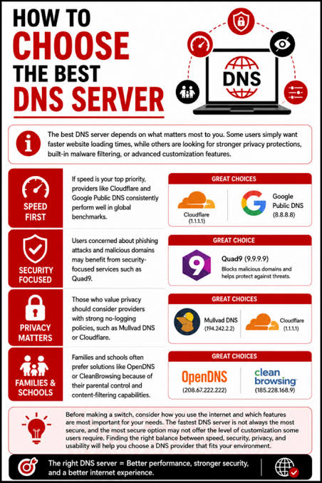
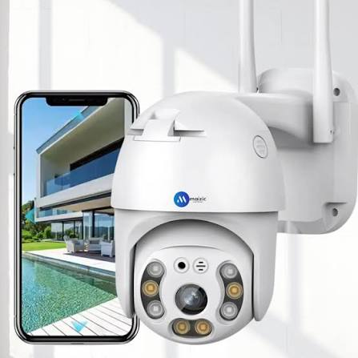
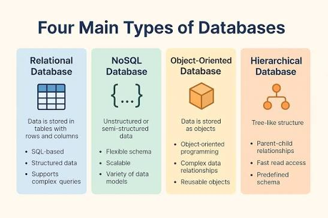

NETWORKING
Enterprise Network Infrastructure
LAN/WAN, switching, routing and network troubleshooting.
HELLO, I'M
I build, maintain and troubleshoot reliable IT infrastructure, enterprise networks, servers and security systems.
I am an IT professional focused on keeping business technology secure, reliable and available.
My experience covers enterprise networking, server administration, hardware troubleshooting, CCTV infrastructure, database support and end-user technical support.
I approach technical problems systematically: identify the issue, analyze the root cause, implement a solution and document the result.
Technologies and technical areas I work with.
LAN/WAN, IP addressing, VLANs, switching, routing and network troubleshooting.
Active Directory, user management, permissions, server maintenance and troubleshooting.
Endpoint protection, access control, firewall concepts and secure network practices.
IP cameras, NVR/DVR configuration, networking and surveillance troubleshooting.
Desktop, laptop, printer, operating system and hardware diagnostics.
Database connectivity, SQL environments, backup and application support.
Practical IT infrastructure and technical operations.

LAN/WAN, switching, routing and network troubleshooting.

Server administration and enterprise user management.

IP cameras, NVR configuration and surveillance networking.

Database connectivity and business application support.
Computer Science degree with focus on information technology, software, networking and computer systems.
Continuous development in networking, server administration, cybersecurity and enterprise IT support.
Professional certifications earned to validate my technical skills.

Issuing Organization • 2026
If you are looking for an IT professional who enjoys solving technical problems and maintaining reliable infrastructure, let's connect.